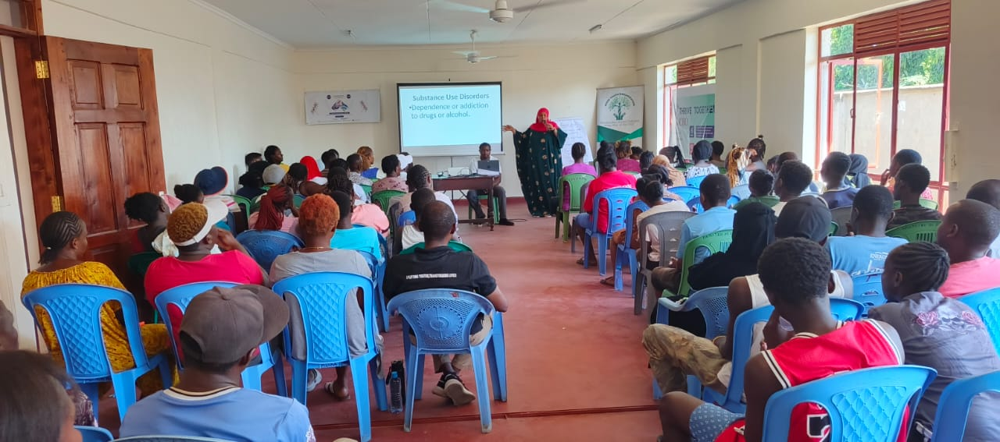
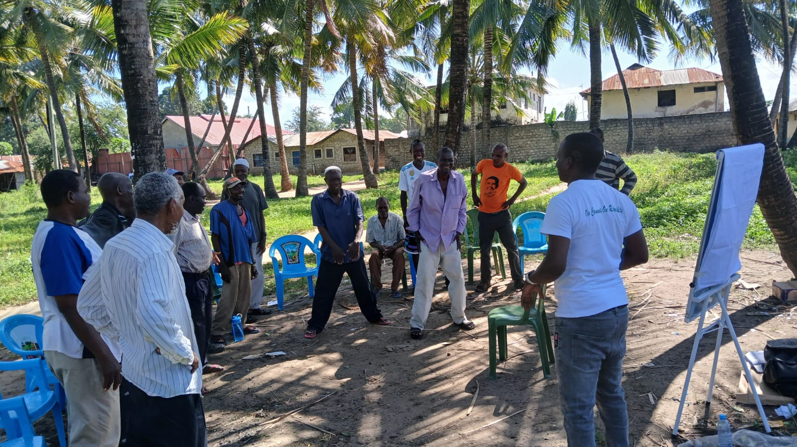
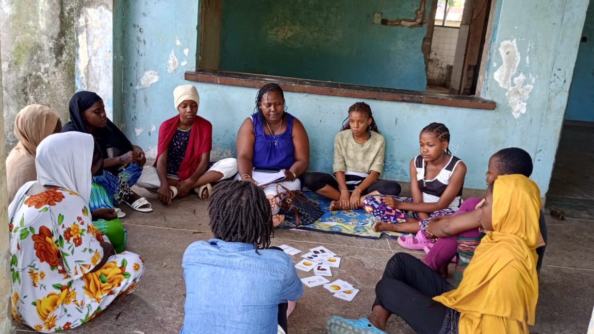
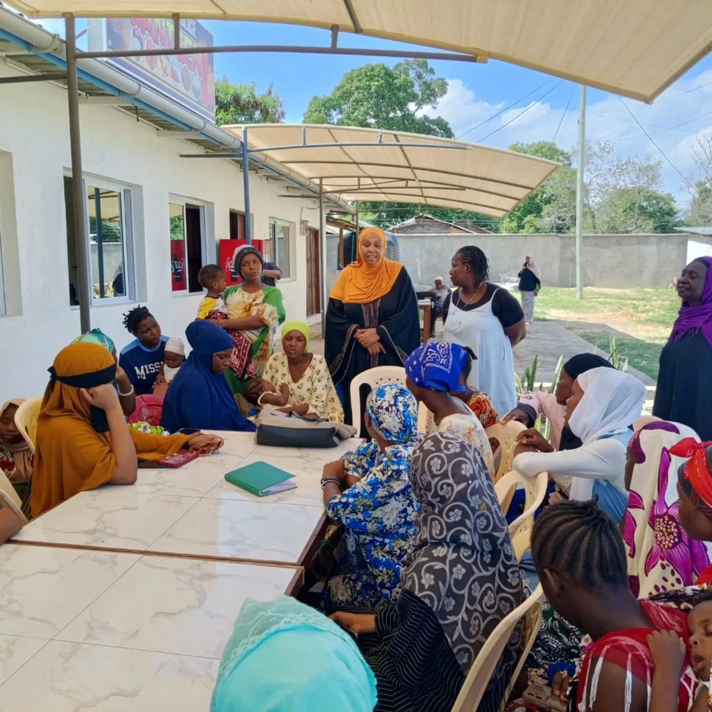
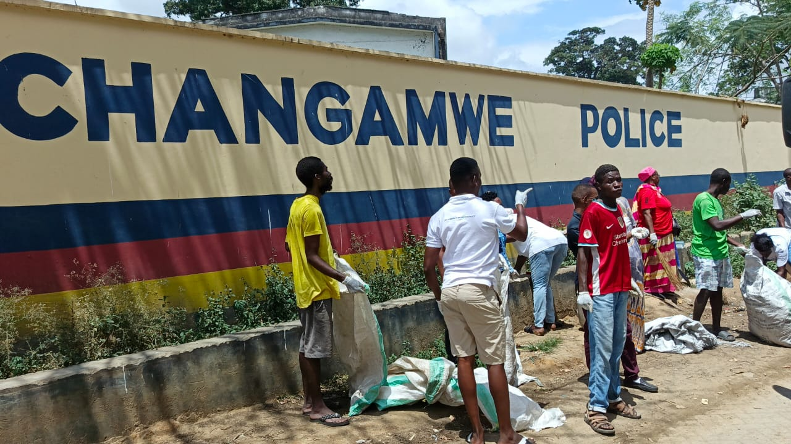
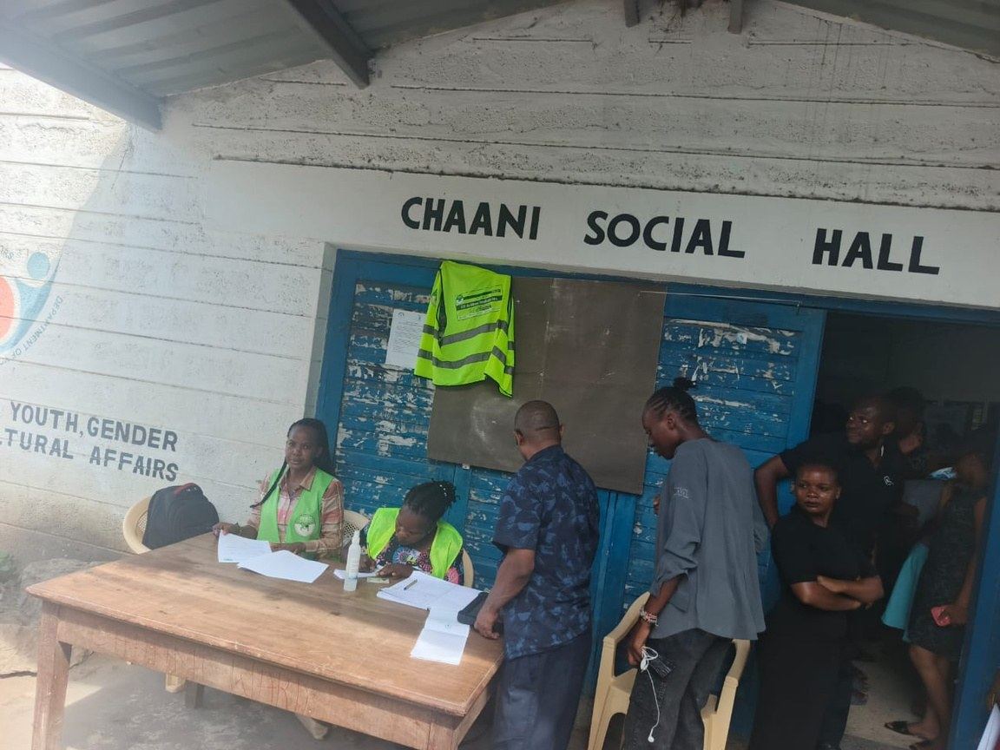

Mental Health Literacy Project
Workshops and campaigns on stigma reduction, common mental illnesses, symptoms, triggers, treatment, self-care, and help-seeking behaviours for youth, caregivers, and community members.
Reach: 8,000+ individualsPrograms
MYO supports mental health through prevention, promotion, and rehabilitation while linking care to SRHR, livelihoods, climate action, and inclusive governance.
Mental Health & Social Wellbeing
Our mental health programs reduce stigma, strengthen help-seeking behavior, and create safe community spaces for care and resilience.
Workshops and campaigns on stigma reduction, common mental illnesses, symptoms, triggers, treatment, self-care, and help-seeking behaviours for youth, caregivers, and community members.
Reach: 8,000+ individuals
A Changamwe Sub-County project run with Mombasa Women Empowerment Network, Thrive Together CBO, and Railway Youth Organization to strengthen mental health literacy among youth, women, and elderly community members.
Target: 500 participants
A youth-centered, play-based mental health initiative using Ludo to create safe and non-stigmatizing spaces for men aged 18+ to discuss mental health, masculinity, emotional expression, and peer support.
Reach: 500+ men
Structured psychological support strategies for adults aged 18–64 years, helping participants manage practical and emotional problems in communities exposed to adversity.
Impact: 1,000+ families
Implemented with TIKO Africa, County Government of Mombasa, and Strong Minds to strengthen relationships and reduce psychological distress among youth experiencing depression, anxiety, and stress.
Reach: 1,600+ individuals
Rehabilitation, counselling, psychosocial support, referrals, and social reintegration for people affected by mental health and substance use challenges, supported through partnerships including Port Reitz Hospital.
Health, Gender & Livelihoods

Youth-friendly SRHR interventions with the Tiko ecosystem to improve accurate information, reduce teenage pregnancies, promote menstrual hygiene, strengthen HIV prevention, and link young people to GBV support.
Reach: 2,000+ individuals
Mentorship, career guidance, skills development, talent nurturing, strategic partnerships, vocational linkages, internships, entrepreneurship, and livelihood pathways for AYPs.
Reach: 1,500+ youth; 70+ Young Billionaires Club membersA continuum-of-care model where girls completing IPT-G sessions transition into YSLAs for financial literacy, structured savings, credit access, and long-term economic resilience.
Impact: 500+ girls since July 2025Community Resilience

Community and beach clean-ups, tree-growing campaigns, mangrove restoration, environmental responsibility, community ownership, and youth-led climate-conscious leadership.

Civic engagement, community dialogues, advocacy campaigns, stakeholder forums, accountability, transparency, and citizen participation among youth, women, and marginalized groups.
Collaborate
MYO welcomes partnerships that expand mental health care, SRHR, livelihoods, climate action, and community resilience.